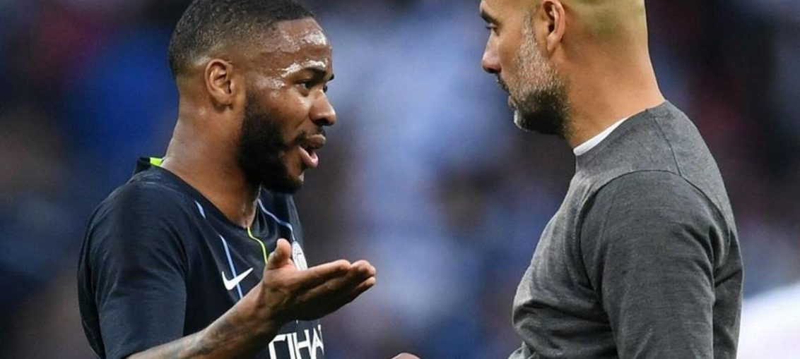

Posted at Date: April 10, 2019
Credit : রাইট স্পোর্টস ওয়েব ডেস্ক
অতীত-সাফল্যই অনুপ্রেরণা গারদিওলার

টটেনহ্যাম-ম্যানচেস্টার সিটি vs লিভারপুল-পোর্তো
রাত ১২-৩০
বার্সেলোনায় পেপ গারদিওলার সাফল্যই এখন অনুপ্রেরণা বার্সেলোনার, গারদিওলার নিজেরও! বছর দশ আগের কথা। ২০০৯ চ্যাম্পিয়নস লিগ ফাইনালে ইংল্যান্ডের ওয়েম্বলি স্টেডিয়ামে ম্যানচেস্টার ইউনাইটেডকে উড়িয়ে দিয়েছিল গারদিওলার বার্সেলোনা। অ্যালেক্স ফার্গুসন স্বীকার করেছিলেন পরে, তাঁকে এবং তাঁর দলকে এভাবে অসম্মানিত করেনি আর কোনও দল। কথিত এবং ম্যানচেস্টার গার্ডিয়ান-এ সিড লো লিখেওছেন, খেলা শেষ হওয়ার মিনিট দশ আগে নাকি বলের পেছনে ছুটতে ছুটতে বীতশ্রদ্ধ ওয়েন রুনি নাকি (কল্পনায়) জাভি এরনানদেজজকে গিয়ে বলেওছিলেন, ‘ঠিক আছে বাবা, তোমরাই জিতেছ। এবার এই বাকি সময়টুকু আমাদের অন্তত বল-খোঁজা থেকে মুক্তি দাও!’
সেই মরসুমে বার্সেলোনা ছয়ে-ছয় করেছিল। গারদিওলার প্রথম মরসুম কাম্প নু-তে, ২০০৮-০৯। ফুটবল বিশ্ব মুগ্ধ হয়ে দেখেছিল বলপায়ে লা মাসিয়ার মেসি-জাভি-ইনিয়েস্তা-বুসকেতসদের দাপাদাপি। স্পেনের লা লিগা, কোপা দেল রে, চ্যাম্পিয়ন্স লিগ, পরের মরসুমের শুরুতে স্প্যানিশ সুপার কাপ, ইউরোপের সুপার কাপ এবং ক্লাব বিশ্বকাপ। ইউরোপে আর কোনও ক্লাব যে-সাফল্য ছোঁয়া তো দূরের কথা, কাছাকাছিও আসতে পারেনি।
১০ বছরের ব্যবধানে, এক ইংরেজ ক্লাবের হয়ে আবারও ইতিহাস লিখতে চাইছেন গারদিওলা এবার। সম্ভাব্য চার ট্রফির সন্ধানে রয়েছে ম্যানচেস্টার সিটি। ইংল্যান্ডের তিন ট্রফি – ইপিএল, এফএ কাপ এবং লিগ কাপের সঙ্গে ইউরোপে চ্যাম্পিয়নস লিগ।
ইপিএল-এ সিটি এখন দ্বিতীয়, শীর্ষে-থাকা লিভারপুলের চেয়ে একটি ম্যাচ কম খেলে দু’পয়েন্টে পিছিয়ে – ৩৩ ম্যাচে লিভারপুলের পয়েন্ট ৮২, ৩২ ম্যাচে সিটির ৮০। আগামী ১৮ মে এফএ কাপের ফাইনালে সিটি খেলবে ওয়াটফোর্ডের বিরুদ্ধে। আর, ইএফএল কাপ জিতেছে সম্প্রতি, চেলসিকে ৪-৩ টাইব্রেকারে হারিয়ে, যে-ম্যাচ সিটির জয়ের চেয়েও বেশি প্রচারিত হয়েছিল চেলসির গোলরক্ষক কেপা আরিজাবালাগা তাঁর কোচ মৌরিজিও সারির নির্দেশ উপেক্ষা করে মাঠে থেকে যাওয়ায়।
উইলি কাবায়েরোকে টাইব্রেকারের আগে নামাতে চেয়েছিলেন সারি। তাঁর গোলরক্ষক নির্দেশ মানেননি, জোর করেই থেকে গিয়েছিলেন মাঠে এবং চেলসি টাইব্রেকারে হেরেছিল। অর্থাৎ, চারের মধ্যে মাত্র একটি ট্রফি হাতে সিটির। কিন্তু, বাকি তিনটিতেও সরব উপস্থিতি। যার মধ্যে হয়ত সবচেয়ে বড় পরীক্ষাগুলোর একটি মঙ্গল-রাতে, টটেনহ্যাম হটস্পারের বিরুদ্ধে, টটেনহ্যামের নতুন স্টেডিয়ামে, ইউরোপে কোয়ার্টার ফাইনালের প্রথম পর্বে।
গারদিওলার প্রশিক্ষণে সিটি শেষ চার ম্যাচে অপরাজিত স্পারের বিরুদ্ধে, শেষ তিনটি ম্যাচই জিতেছেন সের্খিও আগেরোরা। সিটির হাইপ্রেসিং ও পাসিং ফুটবলের সামনে থই পায়নি মৌরিসিও পোচেত্তিনোর টটেনহ্যাম। পাল্টা আক্রমণে যাওয়া উচিত বলতাড়া করে, নাকি, বলের দখল সিটিকে দিয়ে নিজেদের বক্সে নেমে এসে ‘পার্কিং দ্য বাস’ এবং পরে হ্যারি কেনদের গতি কাজে লাগিয়ে প্রতিআক্রমণ? পোচেত্তিনোর অনিশ্চয়তাকে মূলধন করেই নিজেদের খেলা নিজেদের মতো করে খেলে ইপিএল-এ এখন দ্বিতীয় স্থানে-থাকা দল হারিয়ে দিচ্ছিল তৃতীয়দের।
মঙ্গল-রাতে কি স্পার পাল্টাবে? ইউরোপে অ্যাওয়ে ম্যাচে গারদিওলার দলের পারফরম্যান্স, সেই বার্সেলোনায় থাকার সময় থেকেই, ততটা বড়মুখ করে বলার মতো নয়। যদিও লন্ডনেই খেলা, খাতায়কলমে অ্যাওয়ে তো বটেই। আগেরোকে নিয়ে অনিশ্চয়তা রয়েছে। টটেনহ্যামের এই মাঠ একেবারেই নতুন, যদিও সুস্থ হয়ে ছন্দে ফিরে কেভিন দে ব্রুইনি পরিষ্কার বলে দিয়েছেন, খেলাটা মাঠে হয় ঠিকই, কিন্তু মাঠ নিয়ে চিন্তিত নন তিনি, চিন্তায় বরঞ্চ বিপক্ষের ফুটবলারদের নিয়ে।
গারদিওলা চেষ্টা করেছেন দলের ফুটবলারদের মাথা থেকে চাপের পাহাড়টা টেনে নামিয়ে দিতে। বলেছেন, ‘চারটে ট্রফি? অসম্ভব! সম্ভব হলে তো আগেও কেউ না কেউ করে দেখাত। কেন পারেনি? সম্ভব নয় বলেই। আমিও ভাবছিই না।’ বড় ম্যাচের আগে এমন বলে নিজের ফুটবলারদের ওপর থেকেচাপ কমানোর রাস্তাটা সুভাষ ভৌমিকদের যেমন, গারদিওলাদেরও তেমনই!
যুরগেন ক্লোপ আসার পর লিভারপুল গতবার ইউরোপের ফাইনালে পরাস্ত রেয়াল মাদ্রিদের কাছে, এবার অন্তত সেমিফাইনালে পৌঁছনোর ক্ষেত্রে ফেবারিট। শুধু তাই-ই নয়, সামনের মরসুমে চ্যাম্পিয়নস লিগে খেলবে, এখনই নিশ্চিত, ইপিএল-এ পাঁচ ম্যাচ বাকি থাকতেই। ক্সোপ স্বভাবতই খুশি। ‘চ্যাম্পিয়নস লিগে খেলতে চায় সবাই। কিন্তু সে জন্য মরসুমের শেষ পর্যন্ত অপেক্ষা করতে হয়। আমরা এখনই সেই লক্ষ্যে পৌঁছেছি বলে আলাদা আনন্দ। মানসিক স্বস্তি। ফুটবলাররাও খোলামনে খেলতে পারবে, মরসুমের বাকি সময়টা।’
ইপিএল-এর শীর্ষে তো আছেই, ক্লোপের হাত ধরে লিভারপুল ফিরিয়ে আনতে চাইছে ইউরোপে হৃত গৌরব। গতবার প্রথম ষোলয় এই পোর্তোর সঙ্গেই দেখা হয়েছিল এবং সহজেই জিতেছিল লিভারপুল। এস্তাদিও দো দ্রাগাও-এ, পোর্তোর মাঠে ৫-০ জিতে প্রথম ম্যাচেই পরের পর্বে যাওয়া নিশ্চিত করে ফেলেছিল ইউরোপে পাঁচবারের জয়ী লিভারপুল। ক্লোপ অবশ্য মানতে চাইছেন না, সহজেই হারানোর কথা। ‘ফল হয়ত অন্য কথা বলছে। কিন্তু আমরা খেলেছিলাম বলেই জানি, ঠিক কতটা সমস্যা তৈরি করেছিল পোর্তো। ইউরোপে ওরা কঠিন প্রতিপক্ষ।’
তাই, কোনওভাবেই পোর্তোকে হাল্কাচালে নিচ্ছে না লিভারপুল, নিশ্চিত। ‘আমরা তো আর রেয়াল মাদ্রিদ নই যারা শেষ তিনবারই চ্যাম্পিয়নস লিগ জিতেছে! খিদেটা তাই বেশি আমাদের। ট্রফি জিততে যা যা করতে হয়, করতে চাই।’
সের্গিও কোনসেইসাওয়ের অধীনে পোর্তো আক্রমণাত্ম ফুটবল খেলছে। চ্যাম্পিয়নস লিগের প্রাথমিক পর্বে ১৯ গোল করেছিল তারা, লিভারপুলের গোলসংখ্যা যেখানে ১২। গোলে ইকের কাসিয়াস এবং রক্ষণে পেপে-র মতো বহু বছরের অভিজ্ঞ ফুটবলার দলে যেমন, এদের মিলিতাও এবং ফ্রান্সিসকো সোয়ারেসের মতো তরুণও উঠে এসেছেন। গত বছরের অপমানজনক হার ভুলতে আজ রাতে অ্যানফিল্ডে যাঁরা নতুন ইতিহাস লিখতে প্রস্তুত।
অ্যানফিল্ডও তৈরি, মাঠ এবং মাঠের বাইরে বিপক্ষকে উড়িয়ে দিতে। সালাহ-মানে-ফির্মিনো ত্রিভুজ, ফন ডিইকের নির্ভরতা আর ক্লোপের ওস্তাদি মিলিয়ে, বরাবরের মতোই তৈরি অ্যানফিল্ড, যেখানে কেউ একা হাঁটে না!
Top Stories

Calcutta Sports Journalists' Club requests the pleasure of your company at its annual awards functionMore...

Jasprit Bumrah has been declared fit and he will now be available for selection for India's third Test against England at Trent Bridge. More...

Ronaldo has increased Juventus' standing among Europe's elite. More...